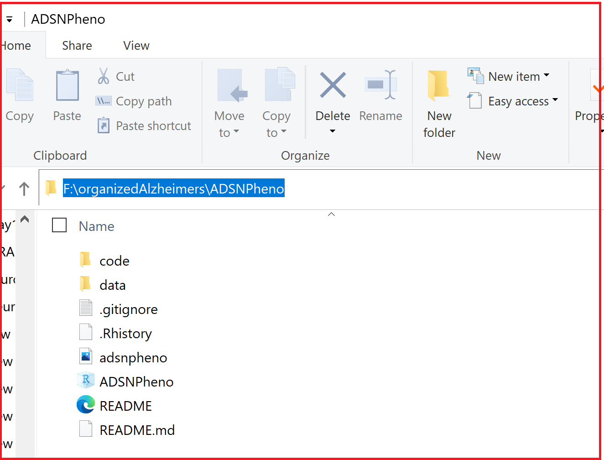
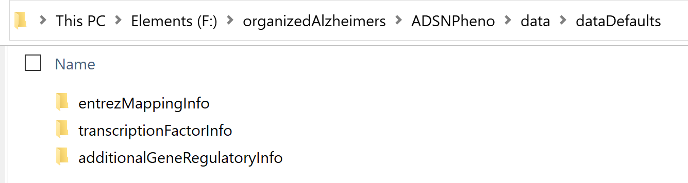

Chapter 3 Step 0: Setup and Defaults
Please setup the appropriate workspace environment
Please note that it is important to download our ADSNPheno code from https://github.com/daifengwanglab/adsnpheno onto your local computer or server, where you can access it. It is recommended that you work with the layout of our existing folders (with our data files and code).
Then, you make adjustments as needed in the ADSNPheno folder, such as:
adding your respective data files to the appropriate folders (please go to data folder)
changing the parameters in the code based on your needs and requirements (by going to code > userInputForEachStep)
adapting our code to further suit your specific needs
This is to help you adapt on our code as well, better understand the tools involved, and be more user-friendly.
When you download our pipeline ADSNPheno, as a zip file(“ADSNPheno-master.zip”), it hopefully will come with the sub-folders shown above (such as the “code” and “data” folders). Please unzip the folder and then note the complete file path location of the unzipped folder, which will be the variable adsnphenoDirectory. For instance, on Saniya’s computer, this ADSNPheno folder is located here: “F://organizedAlzheimers//ADSNPheno//,” so adsnphenoDirectory = “F://organizedAlzheimers//ADSNPheno//.”

3.1 Default Datasets:
Please note that we have shared 3 data sources that we have used for our analysis, which we believe may be general-purpose and helpful references for you. These are also found in the dataDefaults folder (data \(\rightarrow\) dataDefaults) and are information on:
- Entrez Mapping Information
- Transcription Factor Information
- Additional Gene Regulatory Information

Please see these respective sections below for more information about these data files and on how to appropriately edit this information. For your convenience, these default data files have been saved as an RData object, which can be loaded with this command:
load("data/generalDataForPipeline.RData")These data objects are then loaded, which are then used by the pipeline.
3.1.1 1. Entrez Mapping Information:
To assist you with your gene set, please note that we have tried to build an extensive resource on some of the Entrez IDs for various genes so that you can map many genes to Entrez IDs. Please beware that Excel may distort some gene names like SEPT7 and MARC1 to numeric date values by mistake (we have tried to troubleshoot for some of those situations). It is not exhaustive, so please check additional sources such as NCBI for any genes you cannot find and make adjustments to this default data source, as needed, if you find any discrepancies. And, please email Saniya at skhullar2@wisc.edu, so she can update the files as needed (thanks for your help!). For many genes that begin with “LOC,” the entrez ID is often the numeric part of the gene name. This mapping will be used as a lookup in the pipeline to help with merging relationships, from disparate sources, reliably!
Please note an example of some rows of our “data//dataDefaults//entrezMappingInfo//infoDFMappingsGeneSymbolAndID.csv”:
someRows = c(1:5, 200:205)# 10 different rows of the CSV as an example
dim(infoDF) # 59,307 rows and 2 columns## [1] 58687 2infoDF[someRows,] # geneSymbolName mapping to respective entrezIDs. Please double-check.## geneSymbolName entrezID
## 1 15.212 3805
## 2 47.11 3802
## 3 3635 201626
## 4 Jul-60 11054
## 5 19-Feb 60343
## 204 ABHD16B 140701
## 205 ABHD17A 81926
## 206 ABHD17AP1 728917
## 207 ABHD17AP3 648359
## 208 ABHD17AP4 729495
## 209 ABHD17AP5 91219# geneSymbolName entrezID
# 1 15.212 3805
# 2 47.11 3802
# 3 3635 201626
# 4 Jul-60 11054
# 5 19-Feb 60343
# 200 ABHD14B 84836
# 201 ABHD15 116236
# 202 ABHD15-AS1 104355133
# 203 ABHD16A 7920
# 204 ABHD16B 140701
# 205 ABHD17A 819263.1.2 2. Transcription Factor Information:
3.1.3 3. Additional Gene Regulatory Information:
Transcription Factor (TF) to Target Gene (TG) relationships based on TRRUST 2.0, which may serve as an additional source of TF-TG interactions. Information is also provided on some relationships and if the TF activates or represses the TG.
Please note an example of some rows of our “data//dataDefaults//additionalGeneRegulatoryInfo//Trrust2.csv.” Here, CombinedName basically uses the gene symbol names and 2 pipes to represent the relationship: “TF || RegulatedGene.” Thus, the 1st row has “AATF” as the TF and “CDKN1A” as the RegulatedGene, so CombinedName will be “AATF || CDKN1A”
dim(trrust2DF) # 9,395 rows of unique TF-TG relationships and these 5 columns (at least) are needed. ## [1] 9395 5#head(trrust2DF) # the first 5 rows of the TRRUST2.0 data source.
# TF RegulatedGene Source Info CombinedName
# 1 AATF CDKN1A Trrust2 TRRUST2 (Regulation: Unknown) AATF || CDKN1A
# 2 AATF KLK3 Trrust2 TRRUST2 (Regulation: Unknown) AATF || KLK3
# 3 AATF MYC Trrust2 TRRUST2 (Regulation: Activation) AATF || MYC
# 4 AATF TP53 Trrust2 TRRUST2 (Regulation: Unknown) AATF || TP53
# 5 ABL1 BAX Trrust2 TRRUST2 (Regulation: Activation) ABL1 || BAX
# 6 ABL1 BCL2 Trrust2 TRRUST2 (Regulation: Repression) ABL1 || BCL23.2 Adjusting Default Code:
3.3 Default Settings:
Below, please note the main parameters to adjust (and please see step0_loadingInDefaultDatasets.R for additional parameters that may be varied)
| Variable Input Needed by You | Description | Default Value |
|---|---|---|
| adsnphenoDirectory | The region of the body that your gene expression data is for. In our example, it is the Hippocampus Ca1 Region | adsnphenoDirectory = “F://organizedAlzheimers//ADSNPheno//” |
| tfsUsed | The sources of information for the Transcription Factors (TFs). Here, we use TFs found in Lambert and/or Jaspar as our default. | tfsUsed = “LambertAndJaspar” |
| transcriptionFactorsFilePath | In the dataDefaults > transcriptionFactorInfo directory, this is the name of the CSV file with the list of TFs you want to use. Here, our list is for Lambert and/or Jaspar TFs. | transcriptionFactorsFilePath = “LambertAndJasparTFs.csv” |
| geneToEntrezIDMappingPath | In the dataDefaults > entrezMappingInfo directory, this is the name of the CSV file with 2 columns: [Symbols, entrezID]. Here, “Symbols” is the geneName (or # or numeric date), and “entrezID” is what we typically found as the entrezID. | geneToEntrezIDMappingPath = “infoDFMappingsGeneSymbolAndID.csv” |
| additionalGeneRegulatoryNetworkFilePath | In the dataDefaults \(\rightarrow\) additionalGeneRegulatoryInfo directory, this is the name of the CSV file with external gold standard gene regulatory network information you would like to include in the final analysis. Here, we used TRRUST2.0. Our data file needs to contain at least these 5 columns: [TF, RegulatedGene, Source, Info, CombinedName]. CombinedName is basically a column based on the gene symbols and is separated with 2 pipes | additionalGeneRegulatoryNetworkFilePath = “Trrust2.csv” |
| —— | —— | —— |
| numberOfRoundingDigits | Please note that this is the # of digits after the decimal place for rounding any calculations performed during ADSNPheno. | numberOfRoundingDigits = 3 |
| includeTimeStamp | Please note that if this Boolean variable is set to TRUE, then additional time-stamped data files will be saved as the pipeline is run. | includeTimeStamp = TRUE |
| disease | Please note that this is where you would mention the disease or condition or relevant biological context. Here, we are analyzing the potential role of non-coding SNPs in Alzheimer’s disease, so we set disease = “Alzheimers.” | disease = “Alzheimers” |
| outputPath | Please note that this is where the outputs of ADSNPheno would be stored. By default, ADSNPheno will build an output folder and store the corresponding datafiles and results in sub-folders there. | outputPath = “ADSNPheno//ADSNPhenoOutputs” |
We also have shared 3 data sources that we have used for our analysis, which we believe may be general-purpose and helpful references for you. These are also found in the dataDefaults folder (data \(\rightarrow\) dataDefaults) and are information on:
- Additional Gene Regulatory Information: Transcription Factor (TF) to Target Gene (TG) relationships based on TRRUST 2.0, which may serve as an additional source of TF-TG interactions. Information is also provided on some relationships and if the TF activates or represses the TG.
Please note an example of some rows of our “data//dataDefaults//additionalGeneRegulatoryInfo//Trrust2.csv.” Here, CombinedName basically uses the gene symbol names and 2 pipes to represent the relationship: “TF || RegulatedGene.” Thus, the 1st row has “AATF”" as the TF and “CDKN1A”" as the RegulatedGene, so CombinedName will be “AATF || CDKN1A”
#dim(trrust2DF) # 9,395 rows of unique TF-TG relationships and these 5 columns (at least) are needed.
#head(trrust2DF) # the first 5 rows of the TRRUST2.0 data source.
# TF RegulatedGene Source Info CombinedName
# 1 AATF CDKN1A Trrust2 TRRUST2 (Regulation: Unknown) AATF || CDKN1A
# 2 AATF KLK3 Trrust2 TRRUST2 (Regulation: Unknown) AATF || KLK3
# 3 AATF MYC Trrust2 TRRUST2 (Regulation: Activation) AATF || MYC
# 4 AATF TP53 Trrust2 TRRUST2 (Regulation: Unknown) AATF || TP53
# 5 ABL1 BAX Trrust2 TRRUST2 (Regulation: Activation) ABL1 || BAX
# 6 ABL1 BCL2 Trrust2 TRRUST2 (Regulation: Repression) ABL1 || BCL2- Entrez Mapping Information: To assist you with your gene set, please note that we have tried to build an extensive resource on some of the Entrez IDs for various genes so that you can map many genes to Entrez IDs. Please beware that Excel may distort some gene names like SEPT7 and MARC1 to numeric date values by mistake (we have tried to troubleshoot for some of those situations). It is not exhaustive, so please check additional sources such as NCBI for any genes you cannot find and make adjustments to this default data source, as needed, if you find any discrepancies. And, please email Saniya at skhullar2@wisc.edu, so she can update the files as needed (thanks for your help!). For many genes that begin with “LOC,” the entrez ID is often the numeric part of the gene name. This mapping will be used as a lookup in the pipeline to help with merging relationships, from disparate sources, reliably!
Please note an example of some rows of our “data//dataDefaults//entrezMappingInfo//infoDFMappingsGeneSymbolAndID.csv”:
someRows = c(1:5, 200:205)# 10 different rows of the CSV as an example
#dim(infoDF) # 59,307 rows and 2 columns
#infoDF[someRows,] # geneSymbolName mapping to respective entrezIDs. Please double-check.
# geneSymbolName entrezID
# 1 15.212 3805
# 2 47.11 3802
# 3 3635 201626
# 4 Jul-60 11054
# 5 19-Feb 60343
# 200 ABHD14B 84836
# 201 ABHD15 116236
# 202 ABHD15-AS1 104355133
# 203 ABHD16A 7920
# 204 ABHD16B 140701
# 205 ABHD17A 81926- Transcription Factor Information: We shared a combined list of Transcription Factors by Lambert and Jasper (as well as EntrezIDs for several of them), and had 1,668 unique TFs.
# dim(tfsDF) # 1,668 rows (TFs) and 2 columns: TFs, entrezID
# head(tfsDF) # the 1st 5 rows
# TFs entrezID
# 1 RUNX1 861
# 2 TFAP2A 7020
# 3 NR2F1 7025
# 4 CREB1 1385
# 5 E2F1 1869
# 6 NFIL3 4783To adjust data sources, please note that you can just go to the “data \(\rightarrow\) dataDefaults” folder.
Please navigate to code \(\rightarrow\) userInputForEachStep and then go to “step0_loadingInDefaultDatasets.R” to make adjustments to any of these parameters below.
Below, please note the main parameters to adjust (and please see step0_loadingInDefaultDatasets.R for additional parameters that may be varied)
| Variable Input Needed by You | Description | Default Value |
|---|---|---|
| adsnphenoDirectory | The region of the body that your gene expression data is for. In our example, it is the Hippocampus Ca1 Region | adsnphenoDirectory = “F://organizedAlzheimers//ADSNPheno//” |
| tfsUsed | The sources of information for the Transcription Factors (TFs). Here, we use TFs found in Lambert and/or Jaspar as our default. | tfsUsed = “LambertAndJaspar” |
| transcriptionFactorsFilePath | In the dataDefaults > transcriptionFactorInfo directory, this is the name of the CSV file with the list of TFs you want to use. Here, our list is for Lambert and/or Jaspar TFs. | transcriptionFactorsFilePath = “LambertAndJasparTFs.csv” |
| geneToEntrezIDMappingPath | In the dataDefaults > entrezMappingInfo directory, this is the name of the CSV file with 2 columns: [Symbols, entrezID]. Here, “Symbols” is the geneName (or # or numeric date), and “entrezID” is what we typically found as the entrezID. | geneToEntrezIDMappingPath = “infoDFMappingsGeneSymbolAndID.csv” |
| additionalGeneRegulatoryNetworkFilePath | In the dataDefaults \(\rightarrow\) additionalGeneRegulatoryInfo directory, this is the name of the CSV file with external gold standard gene regulatory network information you would like to include in the final analysis. Here, we used TRRUST2.0. Our data file needs to contain at least these 5 columns: [TF, RegulatedGene, Source, Info, CombinedName]. CombinedName is basically a column based on the gene symbols and is separated with 2 pipes | additionalGeneRegulatoryNetworkFilePath = “Trrust2.csv” |
| —— | —— | —— |
| numberOfRoundingDigits | Please note that this is the # of digits after the decimal place for rounding any calculations performed during ADSNPheno. | numberOfRoundingDigits = 3 |
| includeTimeStamp | Please note that if this Boolean variable is set to TRUE, then additional time-stamped data files will be saved as the pipeline is run. | includeTimeStamp = TRUE |
| disease | Please note that this is where you would mention the disease or condition or relevant biological context. Here, we are analyzing the potential role of non-coding SNPs in Alzheimer’s disease, so we set disease = “Alzheimers.” | disease = “Alzheimers” |
| outputPath | Please note that this is where the outputs of ADSNPheno would be stored. By default, ADSNPheno will build an output folder and store the corresponding datafiles and results in sub-folders there. | outputPath = “ADSNPheno//ADSNPhenoOutputs” |